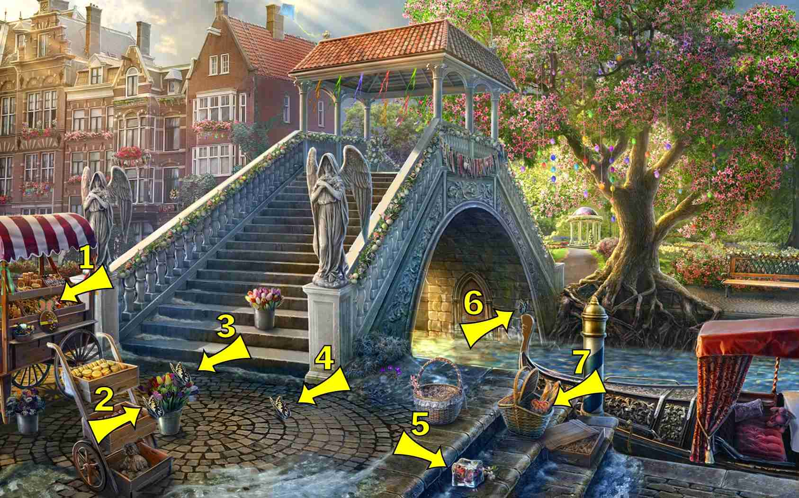
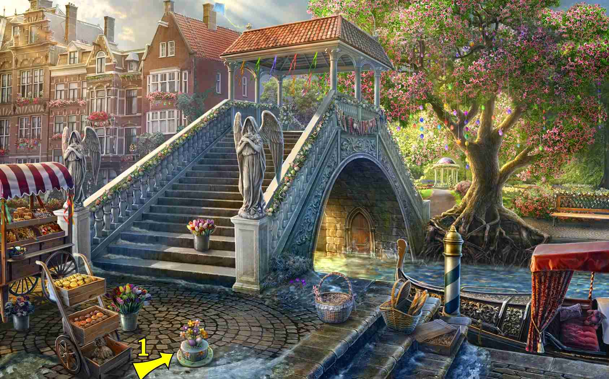
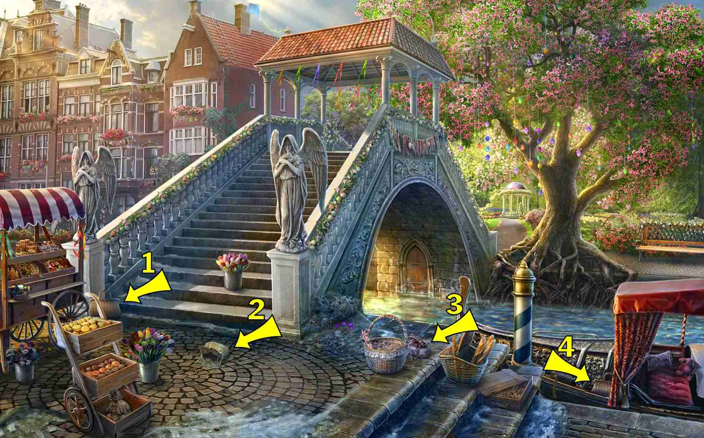

返回
Wiki
春之桥 Bridge
C彩旗
C船
D丁香
F复活节羔羊
F复活节蛋糕
F复活节面包
F风筝
G狗
G鸽子
G鹳
H旱獭
H画架
H花环
H蝴蝶
J桨
J酒杯
L老鼠
L铃兰
M帽子
M明信片
M曼陀林
M木桶
M猫
M玫瑰
M苜蓿草
M面具
N鸟巢
N鸟舍
P瓶子
P苹果
Q青蛙
S书
S刷子
S扇子
S手套
S手提包
S扫帚
S水仙花
S石像鬼
T兔子
T调色板
W王冠
W玩具气球
X信
X喜鹊
X小提琴
X小鸡
X心形
X雪人
X雪花莲
X鞋子
Y云雀
Y摇铃
Y洋娃娃
Y羊角面包
Y雨伞
Z纸杯蛋糕
P苹果 Apple
M木桶 Barrel
Y摇铃 Bell
N鸟舍 Birdhouse
S书 Book
P瓶子 Bottle
S扫帚 Broom
S刷子 Brush
C彩旗 Bunting Flags
H蝴蝶 Butterfly

M猫 Cat
X小鸡 Chick
M苜蓿草 Clover
Y羊角面包 Croissant
W王冠 Crown
Z纸杯蛋糕 Cupcake
S水仙花 Daffodil
G狗 Dog
Y洋娃娃 Doll
6 items:
In the gondola
H画架 Easel
F复活节面包 Easter Bread
F复活节蛋糕 Easter Cake

F复活节羔羊 Easter Lamb
Q青蛙 Frog
S石像鬼 Gargoyle
H花环 Garland
S手套 Gloves
5 items:
On the bottom step of the bridge
S扇子 Hand Fan
S手提包 Handbag

M帽子 Hat
X心形 Heart
F风筝 Kite
Y云雀 Lark
X信 Letter
D丁香 Lilac
L铃兰 Lilies of the valley
X喜鹊 Magpie
M曼陀林 Mandolin
H旱獭 Marmot
M面具 Mask
N鸟巢 Nest
J桨 Oar
T调色板 Palette
8 items:
On the wharf beside the gondola curtains
On top brick landing in center of stairway (next to the river)
NOTE:
Item locations may move slightly with rank being played
G鸽子 Pigeon
M明信片 Postcard
T兔子 Rabbit
L老鼠 Rat
6 items:
On the stairs leading to the gondola
On the stairs, just behind the bucket of flowers (not the 2 locations shown here)
M玫瑰 Rose
C船 Ship
X鞋子 Shoe
X雪花莲 Snowdrops
X雪人 Snowman
G鹳 Stork
W玩具气球 Toy Balloon
Y雨伞 Umbrella
X小提琴 Violin
J酒杯 Wineglass